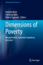
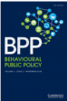
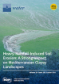
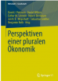
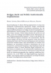
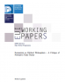

2018
Three Challenges for Behavioural Science and Policy
Behavioural Public Policy, 2(2)
Peer-reviewed articles, books, and essays spanning institutional design, behavioural policy, sustainability governance, and trade justice.
Google Scholar ORCID 0000-0002-4454-5921
A multidisciplinary volume bringing together scholars from philosophy, economics, and political science to examine how poverty is measured, how those measurements encode injustice, and how activist approaches challenge dominant frameworks.




